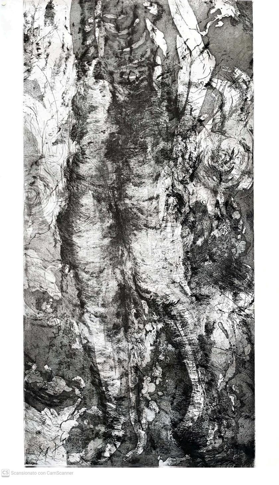
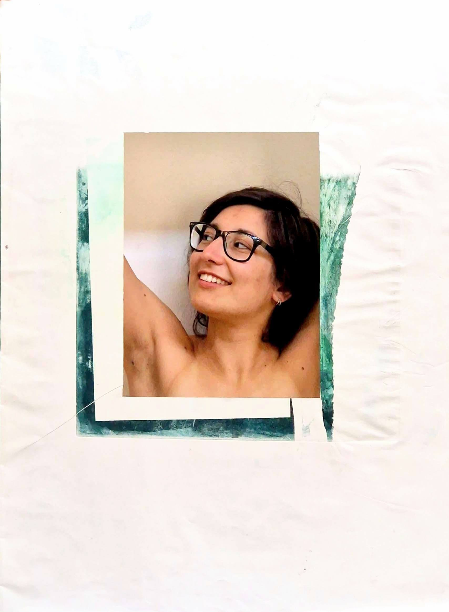
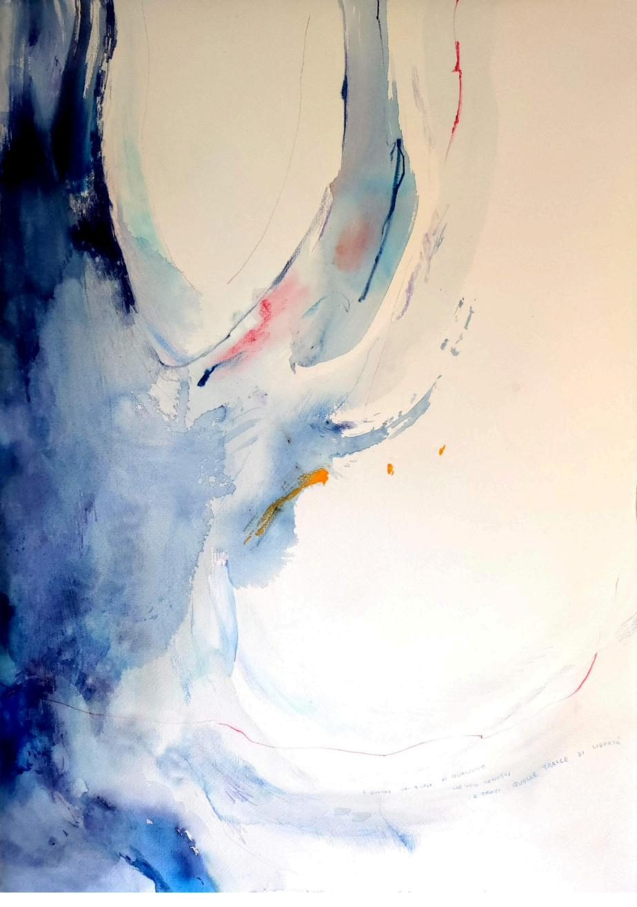
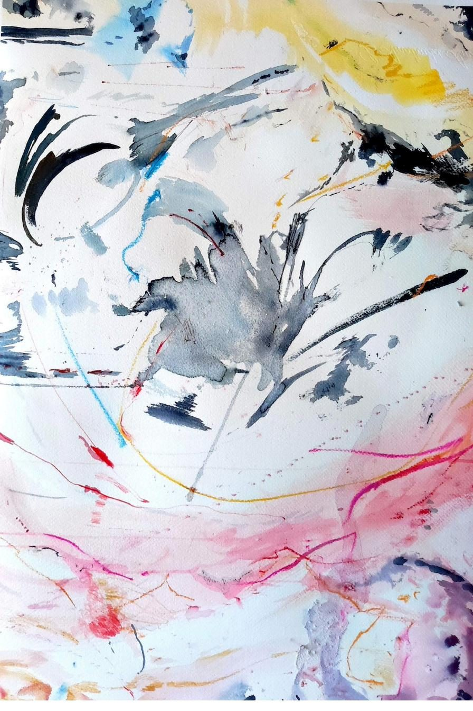
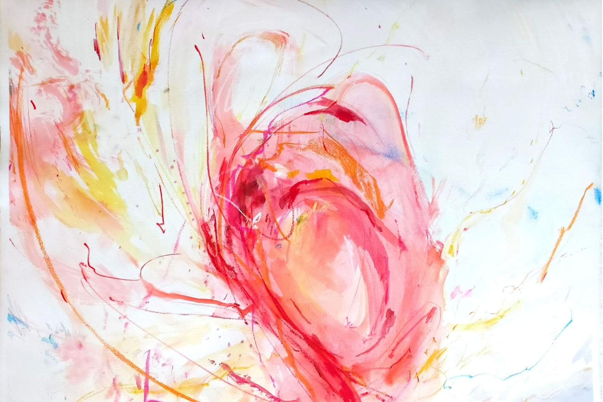
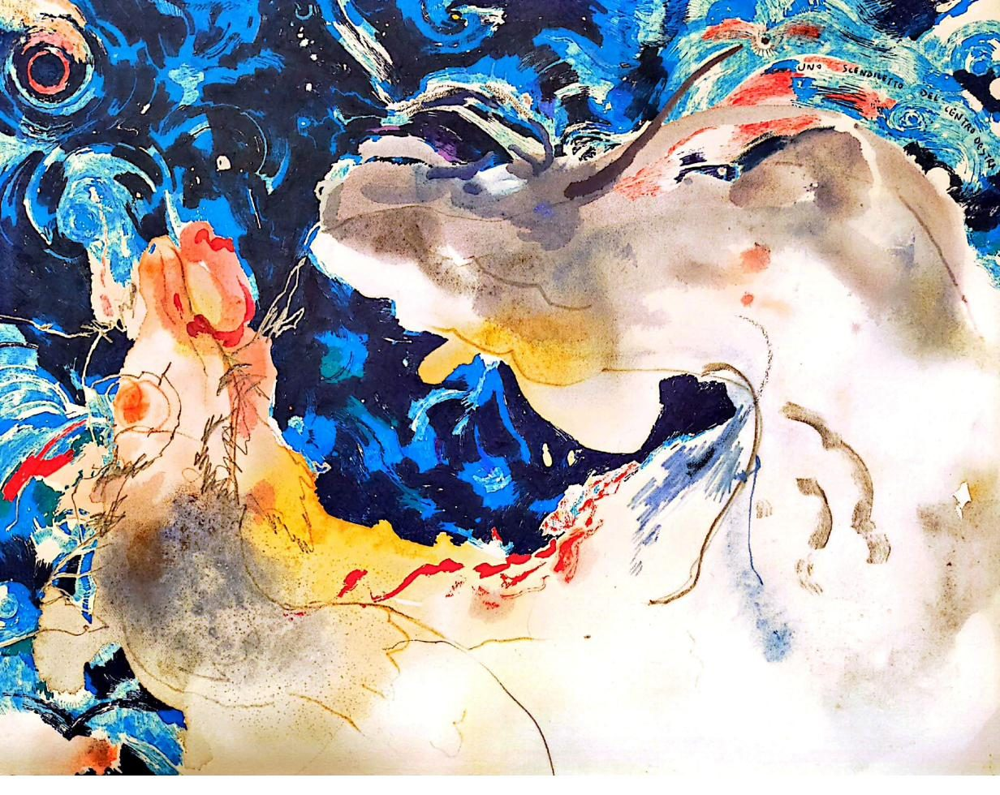

Anna Maria lavora tra carta, inchiostro e acqua, lasciando che il segno trovi la propria strada prima ancora del soggetto.
Le sue opere nascono da un gesto rapido, poi rielaborato nel tempo: tracce di scrittura, colore steso a velature, superfici che alternano pieno e vuoto. Il bianco della carta resta sempre presente, come una parete che accoglie il disegno.
[Qui andrà la biografia completa: formazione, mostre, tecnica.]

Spesso una frase scritta a matita si affaccia sul margine del foglio: un pensiero lasciato accanto all'immagine, come una nota a piè di pagina della pittura stessa.


Il colore arriva per ultimo, come una temperatura più che come una forma.
Rosso, corallo, giallo: le tavole più accese convivono, nel corpo del lavoro, con le incisioni più severe. Sono due lingue della stessa mano.
